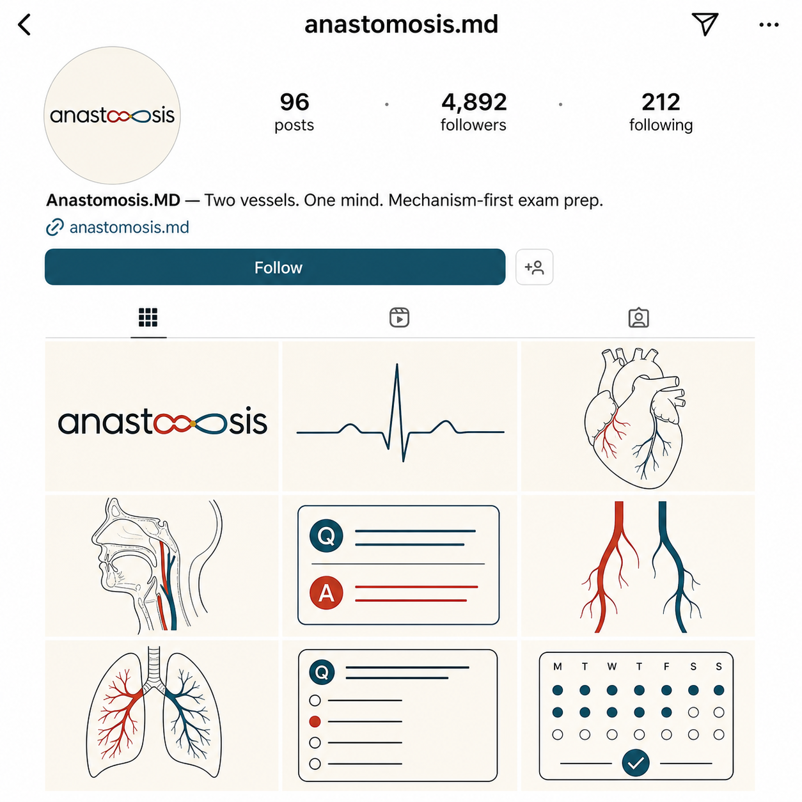
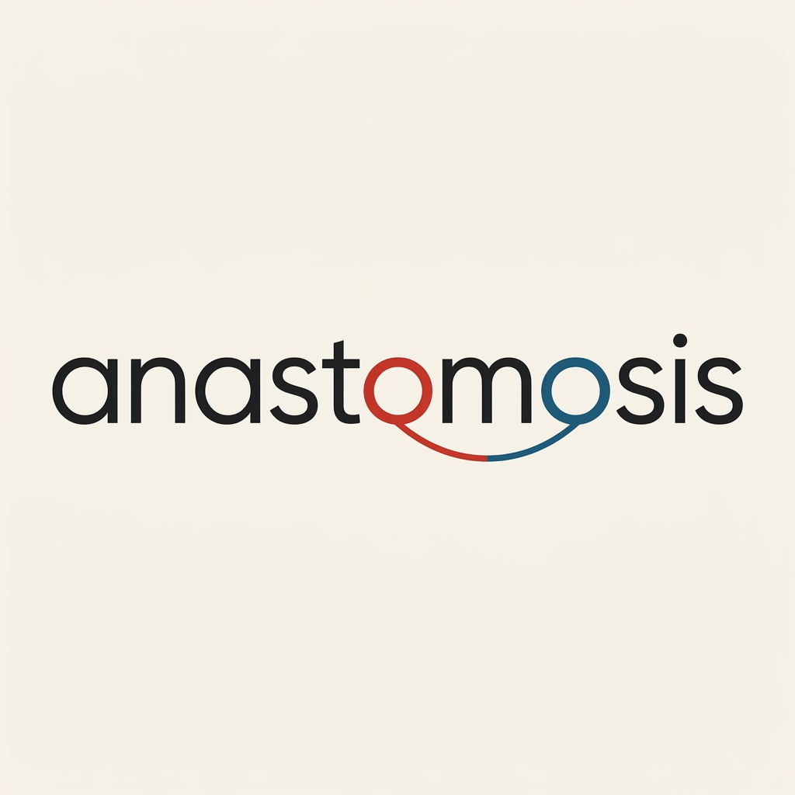
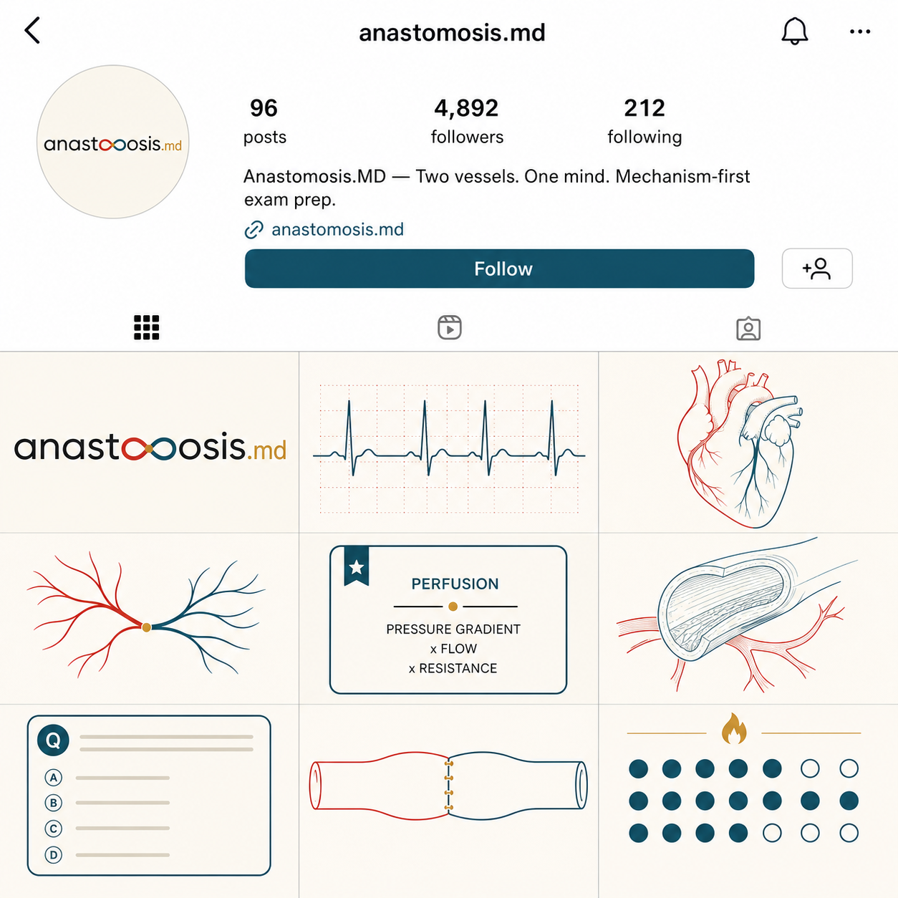

Anastomosis.MD · Logo lab · Wordmark revision
The O-loops, clarified
Same font. Same idea. The word finally reads.
You loved the font and the concept — the two o's as the infinity's loops — but the m was drowning. The revision keeps the design's soul and does one job: make "anastomosis" legible at first glance. Both versions of the pair were revised together (the standing rule).
Version without ".md" — WM-3 → WM-3r
Original · WM-3

Revised · WM-3r

Check: does the word now read as anastomosis at a glance? Is the m clean — three stems, nothing crossing it? Do the o's still carry the infinity loop? Is it still the font you loved?
Version with ".md" — WM-4 → WM-4r
Original · WM-4

Check: same questions, plus — does the gold ".md" still sit quietly at the end, and is it spelled exactly right?
What I measured (honesty department): the originals filled ~97% of the canvas vertically — a tall composition where big loop elements shared space with the word. The revisions resolved into a clean single-line wordmark band (~15% of the canvas height, centered). That usually means clearer word, calmer composition — but it's a bigger simplification than "only fix the m." If the original's tall, looping presence was part of what you loved, say so and I'll re-edit closer to it: same tall composition, just with the m cleaned.